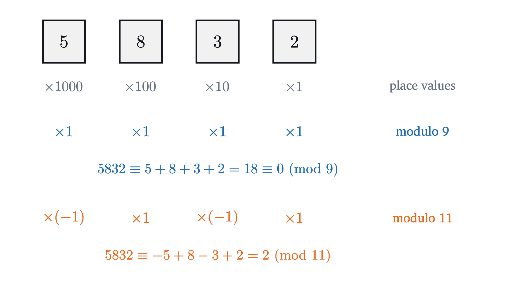
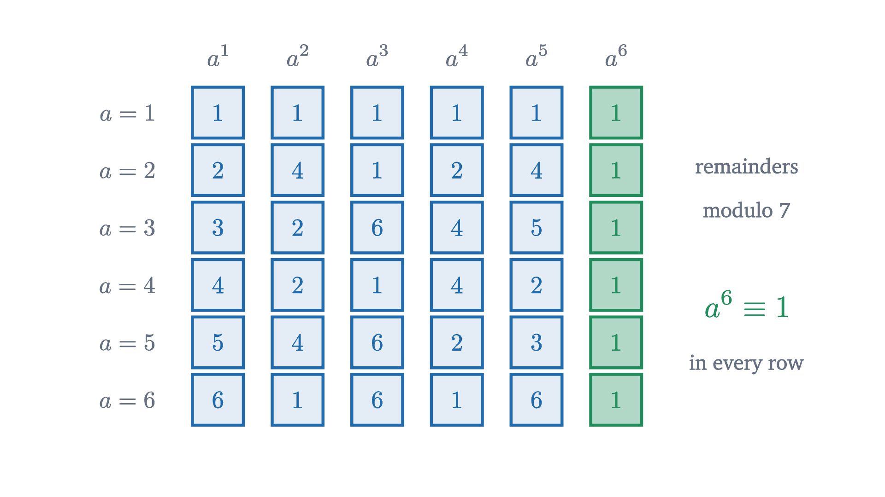

Clock arithmetic: modular arithmetic and why it works
Arithmetic with remainders, made exact. Congruences, the divisibility tests for 9 and 11, when division is allowed, and Fermat's little theorem, with proofs.
21 min·High school and early college·
The whole numbers from 0 to 20 on a number line, wound around a circle with 7 places. Numbers that differ by 7, such as 0, 7 and 14, land on the same place. Each place collects the numbers with one particular remainder on division by 7.Monocurl source
letCOUNT=21letC=[-1.6,-0.4,0]leton_line=|k|[-3.6+k*0.36,1.75,0]leton_circle=|k|around(C,7,0.7+0.4*(k//7),k)letWind=|t|{letprog=|k|smooth(clamp(0,(t*(COUNT+4)-k)/5,1))letpts=map(range(0,COUNT),|k|lerp(on_line(k),on_circle(k),prog(k)))return[Path(pts,MIST,2),map(range(0,COUNT),|k|[Disc(pts[k],lerp(0.17,0.185,prog(k)),CLS[rem(k,7)],0.25,2.5),center{pts[k]}Math(to_string(k),lerp(0.7,0.8,prog(k)),CLS[rem(k,7)])])]}meshwind=Wind(t:0)meshwords=[]slide"wind"playWait(0.8)wind.t=1playLerp(7,[&wind],linear)words=[center{[0,1.75,0]}Cap("numbers 7 apart land on the same place",0.8,INK),center{[2.2,0.45,0]}Math("0 \equiv 7 \equiv 14",0.9,CLS[0]),center{[2.2,-0.25,0]}Math("3 \equiv 10 \equiv 17",0.9,CLS[3]),center{[2.2,-0.95,0]}Math("6 \equiv 13 \equiv 20",0.9,CLS[6]),center{[2.2,-1.6,0]}Math(modtex(7),0.85,INK)]playFade(0.7,[&words])playWait(2.2)
Today is a Tuesday. What day of the week will it be 1000 days from now? And what day will it be $10^{100}$ days from now, a number of days with 101 digits?
The first question can be done by patient counting. The second cannot: no calendar reaches that far and no calculator will hold the number. Yet both have short pencil-and-paper answers, and the second takes barely longer than the first. The method is to stop caring about the numbers themselves and keep only their remainders. Our job is to find out exactly which calculations survive that loss of information, and one of them does not.
Days of the week repeat every 7. Seven days from a Tuesday is a Tuesday, and so is 14 days, and 700. So to move 1000 days ahead, remove as many whole weeks as possible and see what is left over.
Start on Tuesday. Moving ahead 7 days goes once around the circle and comes back to Tuesday.
1000 days is 142 whole weeks and 6 days more. The whole weeks bring us back to Tuesday every time.
Only the remainder 6 is left to do. Six days after a Tuesday is a Monday.
The seven days of the week on a circle. Moving ahead 7 days goes once around. Moving ahead 1000 days goes around 142 times and then 6 places further, so only the remainder 6 matters.Monocurl source
letDAYS=["Mon","Tue","Wed","Thu","Fri","Sat","Sun"]letC=[-1.5,0,0]letR=1.5letMarker=|x,col|Loop(around(C,7,R,x),0.46,col,7)meshtrack=Loop(C,R,MIST,2)meshmarker=[]meshdays=map(range(0,7),|i|[Disc(around(C,7,R,i),0.37,SLATE,0.12,2.5),center{around(C,7,R,i)}Cap(DAYS[i],0.74,INK)])meshpanel=[]slide"Start on Tuesday. Moving ahead 7 days goes once around the circle and comes back to Tuesday."marker=Marker(x:1,col:EMBER)panel=[center{[2.25,1.3,0]}Cap("7 days: once around",0.82,INK)]playFade(0.5)marker.x=8playLerp(2.4,[&marker])slide"1000 days is 142 whole weeks and 6 days more. The whole weeks bring us back to Tuesday every time."panel.=center{[2.25,0.5,0]}Math(str_join(["1000 = 7 \times ",to_string(1000//7)," + ",to_string(rem(1000,7))]),0.85,INK)playFade(0.5)marker.x=29playLerp(2.4,[&marker])slide"Only the remainder 6 is left to do. Six days after a Tuesday is a Monday."marker.x=29+rem(1000,7)marker.col=LEAFplayLerp(2.2,[&marker])panel.=[center{[2.25,-0.4,0]}Cap("Tuesday + 6 days",0.82,EMBER),center{[2.25,-1.0,0]}Cap("= Monday",0.9,LEAF)]playFade(0.5)
Dividing, $1000 = 7 \times 142 + 6$. The 142 weeks change nothing and the remainder 6 carries Tuesday to Monday. The animation at the top shows the same idea for all numbers at once: wind the number line around a circle with 7 places, and two numbers land on the same place exactly when they differ by a multiple of 7. A clock does this with 12 places, which is why the subject is nicknamed clock arithmetic.
The fact about division being used here is the division theorem: for every integer $a$ and every integer $n \ge 1$ there is exactly one pair of integers $q$ and $r$ with $a = qn + r$ and $0 \le r < n$. The number $r$ is the remainder of $a$ on division by $n$. We take this as known. Note that it covers negative numbers: $-5 = (-1) \times 7 + 2$, so the remainder of $-5$ on division by 7 is 2, and five days before a Tuesday is the same weekday as two days after it.
So $1000 \equiv 6 \pmod 7$, because $1000 - 6 = 994 = 7 \times 142$. The definition speaks of differences and the story spoke of remainders. They agree: $a \equiv b \pmod n$ exactly when $a$ and $b$ have the same remainder on division by $n$. Indeed, if $a = qn + r$ and $b = q'n + r$ then $a - b = (q - q')n$. Conversely, if $a - b = nk$ and $b = q'n + r$ with $0 \le r < n$, then $a = (q' + k)n + r$, and since the division theorem allows only one remainder, $r$ is the remainder of $a$ too.
We want to treat congruent numbers as “the same for present purposes”, and for that the relation must behave like equality in three basic ways.
The integers therefore fall into $n$ classes, one for each remainder $0, 1, \dots, n - 1$. They are the $n$ places on the circle.
Suppose that after the 1000 days we wait another 500. Since $500 = 7 \times 71 + 3$, that is 3 more places, and $6 + 3 = 9$, which is 2 places past a whole turn. Is $1500 \equiv 2$? Yes: $1500 = 7 \times 214 + 2$. Adding the remainders gave the right remainder of the sum. That is what the circle suggests, since moving ahead by $a$ and then by $b$ ends where moving ahead by $a + b$ does.
Multiplication is less obvious. Does the remainder of a product depend only on the remainders of the factors?
Pause and try
Find the remainder of $9 \times 10$ on division by 7. Then multiply the remainders of 9 and of 10 and compare. Try the same with $23 \times 45$.
Show answerHide answer
$9 \times 10 = 90 = 7 \times 12 + 6$, remainder 6. The remainders of the factors are 2 and 3, and $2 \times 3 = 6$. For the second, $23 \times 45 = 1035 = 7 \times 147 + 6$, while $23 \equiv 2$ and $45 \equiv 3$, and again $2 \times 3 = 6$.
A rectangle of 9 rows and 10 columns has 90 cells.
Split 9 as 7 + 2 and 10 as 7 + 3. The rectangle falls into four blocks.
Three blocks have a side of length 7. Together they hold 49 + 21 + 14 = 84 cells, a multiple of 7.
What is left is the 2 by 3 block. So 90 and 2 × 3 = 6 differ by a multiple of 7.
Why the remainder of 9 × 10 modulo 7 is the remainder of 2 × 3. Split each side into a multiple of 7 and a remainder. Three of the four blocks have a side of length 7, so they hold a multiple of 7 cells, and only the 2 by 3 block is left.Monocurl source
letU=0.36letORG=[-3.3,-1.5,0]letcell=|x,y|[ORG[0]+x*U,ORG[1]+y*U,0]letrect=|x0,y0,x1,y1|[cell(x0,y0),cell(x1,y0),cell(x1,y1),cell(x0,y1)]letBlocks=|dull,hot|[Region(rect(0,0,7,7),lerp(tint(AZURE,0.35),tint(SLATE,0.2),dull)),Region(rect(7,0,10,7),lerp(tint(AZURE,0.35),tint(SLATE,0.2),dull)),Region(rect(0,7,7,9),lerp(tint(AZURE,0.35),tint(SLATE,0.2),dull)),Region(rect(7,7,10,9),lerp(tint(AZURE,0.35),tint(EMBER,0.6),hot))]meshblocks=Blocks(dull:0,hot:0)meshlines=[map(range(1,10),|i|Seg(cell(i,0),cell(i,9),PAPER,2)),map(range(1,9),|j|Seg(cell(0,j),cell(10,j),PAPER,2)),Outline(rect(0,0,10,9),INK,3)]meshcuts=[]meshnames=[]meshpanel=[]slide"A rectangle of 9 rows and 10 columns has 90 cells."panel=[center{[2.1,1.3,0]}Math("9 \times 10 = 90",0.95,INK)]playFade(0.6)slide"Split 9 as 7 + 2 and 10 as 7 + 3. The rectangle falls into four blocks."cuts=[Seg(cell(7,0),cell(7,9),INK,3.5),Seg(cell(0,7),cell(10,7),INK,3.5),center{[ORG[0]+3.5*U,-1.82,0]}Math("7",0.85,INK),center{[ORG[0]+8.5*U,-1.82,0]}Math("3",0.85,INK),center{[ORG[0]-0.28,ORG[1]+3.5*U,0]}Math("7",0.85,INK),center{[ORG[0]-0.28,ORG[1]+8*U,0]}Math("2",0.85,INK)]panel.=center{[2.1,0.6,0]}Math("(7 + 2) \times (7 + 3)",0.9,INK)playFade(0.6)slide"Three blocks have a side of length 7. Together they hold 49 + 21 + 14 = 84 cells, a multiple of 7."blocks.dull=1playLerp(0.8,[&blocks])names=[center{cell(3.5,3.5)}Math("7 \times 7",0.85,SLATE),center{cell(8.5,3.5)}Math("7 \times 3",0.8,SLATE),center{cell(3.5,8)}Math("2 \times 7",0.85,SLATE)]panel.=center{[2.1,-0.15,0]}Math(str_join([to_string(49+21+14)," = 7 \times ",to_string((49+21+14)//7)]),0.9,SLATE)playFade(0.5)slide"What is left is the 2 by 3 block. So 90 and 2 × 3 = 6 differ by a multiple of 7."blocks.hot=1playLerp(0.8,[&blocks])names.=center{cell(8.5,8)}Math("2 \times 3",0.8,INK)panel.=[center{[2.1,-0.95,0]}Math("90 \equiv 2 \times 3 = 6",0.95,EMBER),center{[2.1,-1.5,0]}Math(modtex(7),0.85,EMBER)]playFade(0.5)
The picture is a proof for these numbers. With letters in place of the numbers it becomes a proof for all.
Pause and try
Now answer the second opening question. Find the remainder of $10^{100}$ on division by 7. (Replace 10 by something smaller, then look at the remainders of the first few powers until you see 1.)
Show answerHide answer
$10 \equiv 3 \pmod 7$, so $10^{100} \equiv 3^{100}$. The powers of 3 modulo 7 are $3,\ 9 \equiv 2,\ 6,\ 18 \equiv 4,\ 12 \equiv 5,\ 15 \equiv 1$. So $3^6 \equiv 1$, and since $100 = 6 \times 16 + 4$ we get $3^{100} = (3^6)^{16} \times 3^4 \equiv 1 \times 4 = 4$. Four days after Tuesday is Saturday. Nothing larger than 18 was ever written down.
You may know the rule that a number is divisible by 9 exactly when the sum of its digits is. Take 5832. Its digits add up to 18, which is divisible by 9, and indeed $5832 = 9 \times 648$. The rule is usually taught as a trick. With congruences it is one line.

Why digit sums work. The number 5832 is 5 × 1000 + 8 × 100 + 3 × 10 + 2. Modulo 9 every power of 10 is congruent to 1, so the number is congruent to the sum of its digits. Modulo 11 the powers of 10 alternate between 1 and −1.Monocurl source
The theorem says more than the school rule: the digit sum has the same remainder as $N$, whether or not that remainder is 0. For 5832 the alternating sum is $2 - 3 + 8 - 5 = 2$, so 5832 leaves remainder 2 on division by 11, and indeed $5832 = 11 \times 530 + 2$.
We have added, subtracted and multiplied congruences. Can we divide them? Try it: $8 \equiv 2 \pmod 6$, that is, $2 \times 4 \equiv 2 \times 1$. Cancelling the 2 would give $4 \equiv 1 \pmod 6$, which is false. Yet in other cases cancelling works. To see what decides it, look at what multiplying by a fixed number does to all the places on the circle at once.
Multiply by 2. Modulo 7 each of the places 1 to 6 receives one arrow. Modulo 10 the even places receive two numbers each and the odd places none.
Multiply by 3. Both tables are rearrangements. Modulo 10 the place 5 is sent to itself.
Multiply by 4. Modulo 7 it is a rearrangement again. Modulo 10 the arrows collide, as they did for 2.
Multiplication tables drawn as arrows. Each place i is joined to the place of k × i, for k = 2, 3, 4, on a circle of 7 places (left) and of 10 places (right). Modulo 7 the arrows always rearrange the nonzero places. Modulo 10 that happens for 3, but for 2 and 4 arrows collide: the places shaded red receive more than one number, and the unshaded places receive none.Monocurl source
letCL=[-1.93,0.28,0]letCR=[1.93,0.28,0]letR=1.48letNR=0.24letArrows=|c,n,k,col|block{for(iinrange(1,n)){letp=around(c,n,R,i)letq=around(c,n,R,rem(k*i,n))if(rem(k*i,n)==i){.Loop(p,NR+0.07,col,3.5)}else{letd=normalize(q-p).Tip(p+d*(NR+0.03),q-d*(NR+0.05),col,2.5,0.15)}}}letPlaces=|c,n|map(range(0,n),|i|[Disc(around(c,n,R,i),NR,SLATE,0.1,2),center{around(c,n,R,i)}Math(to_string(i),0.85,INK)])# how many of the places 1, ..., n - 1 are sent to tlethits=|n,k,t|count(range(1,n),|i|rem(k*i,n)==t)letMarks=|c,n,k|block{for(tinrange(0,n)){if(hits(n,k,t)>1or(t==0andhits(n,k,t)>0)){.Disc(around(c,n,R,t),NR,ROSE,0.25,3).center{around(c,n,R,t)}Math(to_string(t),0.85,ROSE)}if(t>0andhits(n,k,t)==0){.center{around(c,n,R,t)}fill{PAPER}stroke{MIST,2}Circle(NR,48).center{around(c,n,R,t)}Math(to_string(t),0.85,SLATE)}}}letis_perm=|n,k|count(range(1,n),|t|hits(n,k,t)==1)==n-1letVerdict=|c,n,k|[center{[c[0]-0.95,-1.82,0]}Math(str_join(["\times ",to_string(k),"\ \ ",modtex(n)]),0.85,INK),center{[c[0]+0.8,-1.82,0]}Cap(["arrows collide","a rearrangement"][is_perm(n,k)],0.8,[ROSE,LEAF][is_perm(n,k)])]letTable=|k|[Arrows(CL,7,k,AZURE),Arrows(CR,10,k,EMBER)]letFlags=|k|[Marks(CL,7,k),Marks(CR,10,k)]letWords=|k|[Verdict(CL,7,k),Verdict(CR,10,k)]mesharrows=Table(2)meshplaces=[Places(CL,7),Places(CR,10)]meshmarks=Flags(2)meshlabels=Words(2)slide"Multiply by 2. Modulo 7 each of the places 1 to 6 receives one arrow. Modulo 10 the even places receive two numbers each and the odd places none."playFade(0.6)slide"Multiply by 3. Both tables are rearrangements. Modulo 10 the place 5 is sent to itself."arrows=[]marks=[]labels=[]playFade(0.3,[&arrows,&marks,&labels])arrows=Table(3)marks=Flags(3)labels=Words(3)playFade(0.6,[&arrows,&marks,&labels])slide"Multiply by 4. Modulo 7 it is a rearrangement again. Modulo 10 the arrows collide, as they did for 2."arrows=[]marks=[]labels=[]playFade(0.3,[&arrows,&marks,&labels])arrows=Table(4)marks=Flags(4)labels=Words(4)playFade(0.6,[&arrows,&marks,&labels])
Modulo 10, multiplying by 2 sends both 1 and 6 to 2. Once two places have been merged, no operation can separate them again, so “dividing by 2” cannot exist modulo 10. Multiplying by 3 merges nothing: it rearranges the places, and a rearrangement can be undone.
Pause and try
Work modulo 10. For each $a$ from 1 to 9, look for a number $b$ with $ab \equiv 1 \pmod{10}$. Which $a$ have one? What do those $a$ have in common?
Show answerHide answer
$1 \times 1 = 1$, $3 \times 7 = 21 \equiv 1$, $7 \times 3 \equiv 1$ and $9 \times 9 = 81 \equiv 1$. For $a = 2, 4, 6, 8$ every multiple of $a$ is even, so it cannot end in 1, and every multiple of 5 ends in 0 or 5. The successful values 1, 3, 7, 9 are exactly those with no common factor with 10 other than 1.
A number $b$ with $ab \equiv 1 \pmod n$ is called an inverse of $a$ modulo $n$. Multiplying by $b$ undoes multiplying by $a$, which is all that division ever meant. Write $\gcd(a, n)$ for the greatest common divisor of $a$ and $n$.
The proof leans on one fact that we cite without proof. Bézout’s identity says that for any integers $a$ and $n$, not both zero, there are integers $s$ and $t$ with $as + nt = \gcd(a, n)$. It is proved by running Euclid’s algorithm for the greatest common divisor backwards, and it is believable from small cases: $\gcd(3, 10) = 1$ and $3 \times 7 + 10 \times (-2) = 1$.
When $n$ is a prime $p$, every $a$ not divisible by $p$ has $\gcd(a, p) = 1$. So modulo a prime every nonzero place has an inverse, and the circle of 7 behaved well for that reason.
In the weekday problem the key was $3^6 \equiv 1 \pmod 7$, found by trial. Was that luck? Compute all the powers of all the nonzero remainders modulo 7.

The powers of 1, 2, 3, 4, 5, 6 reduced modulo 7. Row a, column k shows the remainder of a to the power k. The rows differ, but the sixth column is 1 in every row.Monocurl source
letcx=|k|-2.75+k*0.72letcy=|a|1.75-a*0.52meshheads=[map(range(1,7),|k|center{[cx(k),cy(0),0]}Math(str_join(["a^",to_string(k)]),0.8,SLATE)),map(range(1,7),|a|center{[cx(0)-0.1,cy(a),0]}Math(str_join(["a = ",to_string(a)]),0.78,SLATE))]meshcells=map(range(1,7),|a|map(range(1,7),|k|NumTile([cx(k),cy(a),0],rem(a^k,7),[AZURE,LEAF][k==6],0.46,0.8,[0.12,0.35][k==6])))meshpanel=[center{[2.75,0.75,0]}Note("remainders",0.76),center{[2.75,0.35,0]}Note("modulo 7",0.76),center{[2.75,-0.5,0]}Math("a^6 \equiv 1",1.0,LEAF),center{[2.75,-1.05,0]}Note("in every row",0.76)]
Every row ends in 1. To find the reason, go back to the arrows. Multiplying by 3 rearranges the places 1 to 6, so the six numbers $3 \times 1, 3 \times 2, \dots, 3 \times 6$ are, after reduction, the numbers 1 to 6 in another order. A product does not care about order.
Take 1 to 6, all the nonzero remainders modulo 7, and multiply each by 3.
Reduce modulo 7. None of the results is 0 and no two are equal.
Put them in order: they are 1 to 6 again. Multiplying by 3 only rearranged the list.
So the product of the multiples is congruent to the product of 1 to 6. Cancelling 1, 2, ..., 6 leaves the sixth power of 3 congruent to 1.
The rearrangement argument for 3 modulo 7. Multiply 1, ..., 6 by 3 and reduce. The results are 1, ..., 6 in a different order, so the two rows have congruent products, and cancelling the common factors leaves 3 to the power 6 congruent to 1.Monocurl source
letBASE=[1,2,3,4,5,6]letTIMES=map(BASE,|v|3*v)letRED=map(TIMES,|v|rem(v,7))letxs=|i|-3.3+i*0.98letRow=|vals,y,col|map(range(0,6),|i|NumTile([xs(i),y,0],vals[i],col,0.78,0.95))letLow=|g|map(range(0,6),|i|NumTile([lerp(xs(i),xs(RED[i]-1),g),-0.8,0],RED[i],EMBER,0.78,0.95))meshtop=Row(BASE,1.5,AZURE)meshmid=Row(TIMES,0.35,SLATE)meshlow=map(range(0,6),|i|Box([xs(i),-0.8,0],[0.78,0.78],MIST,0.25,2))meshnotes=[Tip([2.3,1.3,0],[2.3,0.55,0],SLATE,4,0.2),center{[2.95,0.95,0]}Math("\times 3",0.95,SLATE)]mesheq=[]slide"Take 1 to 6, all the nonzero remainders modulo 7, and multiply each by 3."playFade(0.6)slide"Reduce modulo 7. None of the results is 0 and no two are equal."low=Low(g:0)notes.=[Tip([2.3,0.15,0],[2.3,-0.6,0],EMBER,4,0.2),center{[3.05,-0.2,0]}Math(modtex(7),0.85,EMBER)]playFade(0.6)slide"Put them in order: they are 1 to 6 again. Multiplying by 3 only rearranged the list."low.g=1playLerp(1.8,[&low])slide"So the product of the multiples is congruent to the product of 1 to 6. Cancelling 1, 2, ..., 6 leaves the sixth power of 3 congruent to 1."eq=center{[-0.3,-1.75,0]}Math("3^6 \cdot (1 \cdot 2 \cdots 6) \equiv 1 \cdot 2 \cdots 6 \quad\Longrightarrow\quad 3^6 \equiv 1",0.92,LEAF)playFade(0.6,[&eq])
The theorem is from 1640, and Fermat stated it without proof, as was his habit. Both hypotheses are needed. If $p$ divides $a$, every power of $a$ is congruent to 0. And if the modulus is not prime the conclusion can fail: $2^8 = 256 = 9 \times 28 + 4$, so $2^8 \equiv 4 \pmod 9$. Problem 8 asks where the proof breaks.
The difficulty at the start was size: $10^{100}$ days cannot be counted. The idea that removed it was to decide in advance what we want to know about a number, here its place in the week, and to check which operations respect that. Addition, subtraction and multiplication do, so we could reduce at every step and never hold a large number. Division does not, and tracking down exactly when it does led to inverses and to primes.
The same pattern, throwing away most of a number and computing with what remains, gives the digit tests, check digits on bank cards and book numbers, and the cryptography mentioned above. The rearrangement idea in the proof of Fermat’s theorem is also worth keeping: when an operation only shuffles a finite set, anything that ignores order, such as a product or a sum, is unchanged by it.
Check yourself
What is the remainder of $2^{50}$ on division by 7?
Problems 1 to 3 are direct. Problems 4 to 6 combine ideas or ask for a proof. Problems 7 and 8 extend the lesson.
Problem 1
(a) Find the remainders of 2026 and of $-12$ on division by 7. (b) If today is Tuesday, what day is it 100 days from now, and what day was it 100 days ago?
Show solutionHide solution
(a) $2026 = 7 \times 289 + 3$, so the remainder is 3. And $-12 = 7 \times (-2) + 2$, so the remainder is 2. (b) $100 = 7 \times 14 + 2$, so 100 days ahead is 2 days after Tuesday, a Thursday. Going back, $-100 \equiv -2 \equiv 5 \pmod 7$, so it was the same weekday as 5 days after Tuesday, or 2 days before it: a Sunday.
Problem 2
Find the last digit of $3^{2026}$.
Show solutionHide solution
Work modulo 10. $3^2 = 9$, $3^3 = 27 \equiv 7$, $3^4 = 81 \equiv 1$. Since $2026 = 4 \times 506 + 2$, we get $3^{2026} = (3^4)^{506} \times 3^2 \equiv 9$. The last digit is 9.
Problem 3
Without dividing, find the remainders of 918082 on division by 9 and by 11.
Show solutionHide solution
The digit sum is $9 + 1 + 8 + 0 + 8 + 2 = 28 \equiv 1 \pmod 9$ (since $28 = 27 + 1$), so the remainder modulo 9 is 1. The alternating sum from the units digit is $2 - 8 + 0 - 8 + 1 - 9 = -22 = 11 \times (-2)$, so the number is divisible by 11 and the remainder is 0. Check: $918082 = 11 \times 83462$ and $918082 = 9 \times 102009 + 1$.
Problem 4
Find the inverse of 7 modulo 11, and use it to solve $7x \equiv 5 \pmod{11}$.
Show solutionHide solution
The multiples of 7 are $7, 14, 21, 28, 35, 42, 49, 56$, and $56 = 55 + 1 \equiv 1 \pmod{11}$. So the inverse of 7 is 8. Multiplying $7x \equiv 5$ by 8 gives $x \equiv 40 = 33 + 7 \equiv 7 \pmod{11}$. Check: $7 \times 7 = 49 = 44 + 5$.
Problem 5
Show that the square of an integer is congruent to 0 or 1 modulo 4. Deduce that no number of the form $4k + 3$ is a sum of two squares of integers.
Show solutionHide solution
Every integer is congruent modulo 4 to one of $0, 1, 2, 3$, and by the product rule its square is congruent to $0^2 = 0$, $1^2 = 1$, $2^2 = 4 \equiv 0$ or $3^2 = 9 \equiv 1$. So squares are congruent to 0 or 1. A sum of two squares is then congruent to $0 + 0$, $0 + 1$, $1 + 0$ or $1 + 1$, that is, to 0, 1 or 2 modulo 4, and never to 3. So numbers such as 3, 7, 11, 2027 are not sums of two squares. One calculation with four cases has settled a question about infinitely many numbers.
Problem 6
Find all solutions of $6x \equiv 4 \pmod{10}$ and of $6x \equiv 3 \pmod{10}$. Explain the outcome using $\gcd(6, 10)$.
Show solutionHide solution
$\gcd(6, 10) = 2$, so 6 has no inverse and we test the ten remainders. For $x = 0, 1, \dots, 9$ the values of $6x$ modulo 10 are $0, 6, 2, 8, 4, 0, 6, 2, 8, 4$. The value 4 occurs for $x \equiv 4$ and $x \equiv 9$, so the first congruence has two solutions modulo 10. The value 3 never occurs, so the second has none. The reason: $6x - 10k$ is always even, so $6x$ can only be congruent to even numbers, and each even remainder is hit twice because multiplying by 6 merges $x$ with $x + 5$ (as $6 \times 5 = 30 \equiv 0$).
Problem 7
(a) Find the remainder of $2^{100}$ on division by 13. (b) Prove that $n^7 - n$ is divisible by 7 for every integer $n$.
Show solutionHide solution
(a) 13 is prime and does not divide 2, so $2^{12} \equiv 1 \pmod{13}$. Since $100 = 12 \times 8 + 4$, $2^{100} \equiv 2^4 = 16 \equiv 3$. (b) If 7 does not divide $n$, Fermat’s little theorem gives $n^6 \equiv 1 \pmod 7$, and multiplying by $n$ gives $n^7 \equiv n$. If 7 divides $n$, then $n \equiv 0$ and $n^7 \equiv 0$, so again $n^7 \equiv n$. In both cases 7 divides $n^7 - n$. For example $2^7 - 2 = 126 = 7 \times 18$.
Problem 8
For the modulus 9 and $a = 2$, the conclusion of Fermat’s little theorem fails: $2^8 \equiv 4 \pmod 9$. Go through the proof with $p$ replaced by 9 and find the first step that is false. Then show that the weaker statement $2^6 \equiv 1 \pmod 9$ is true, by applying the rearrangement idea to the list $1, 2, 4, 5, 7, 8$.
Show solutionHide solution
Since $\gcd(2, 9) = 1$, cancelling 2 is valid modulo 9, so the two claims about $2, 4, \dots, 16$ hold: the remainders of $2i$ for $i = 1, \dots, 8$ are $2, 4, 6, 8, 1, 3, 5, 7$, a rearrangement of 1 to 8. The product step holds too: $2^8\, W \equiv W \pmod 9$ with $W = 1 \cdot 2 \cdots 8$. The false step is the last one, “each factor of $W$ has no common factor with the modulus and can be cancelled”. The factors 3 and 6 share the factor 3 with 9. In fact $W$ contains $3 \times 6 = 18$, so $W \equiv 0$ and the congruence only says $0 \equiv 0$.
For the repair, use only the numbers that can be cancelled, $1, 2, 4, 5, 7, 8$, which are those with no common factor with 9. Doubling them gives $2, 4, 8, 10, 14, 16$, with remainders $2, 4, 8, 1, 5, 7$: the same six numbers rearranged. So $2^6 V \equiv V \pmod 9$ with $V = 1 \cdot 2 \cdot 4 \cdot 5 \cdot 7 \cdot 8$, and now every factor of $V$ may be cancelled, leaving $2^6 \equiv 1$. Check: $2^6 = 64 = 63 + 1$. This is the idea behind Euler’s generalization of Fermat’s theorem, the one that RSA uses.
Shared definitions used by this lesson's figures
# house kit: prepended to every essay figure after the std imports# palette. AZURE and EMBER are the two actors, LEAF marks an answer, ROSE a problemletPAPER=[1,1,1,1]letINK=[0.08,0.09,0.11,1]letSLATE=[0.40,0.44,0.50,1]letMIST=[0.85,0.86,0.88,1]letAZURE=[0.13,0.42,0.68,1]letEMBER=[0.89,0.42,0.12,1]letLEAF=[0.13,0.55,0.36,1]letROSE=[0.78,0.22,0.24,1]letPLUM=[0.47,0.30,0.66,1]letGOLD=[0.85,0.62,0.08,1]background=PAPER# an opaque pastel of col; use for fills so overlaps do not darkenlettint=|col,amount=0.18|[1-(1-col[0])*amount,1-(1-col[1])*amount,1-(1-col[2])*amount,1]# text: Cap for labels, Note for quiet labels, Math for typeset mathsletCap=|txt,size=0.75,col=INK|color{col}Text(txt,size,"Charter")letNote=|txt,size=0.65|color{SLATE}Text(txt,size,"Charter")letMath=|tex,size=0.9,col=INK|color{col}Tex(tex,size)# a paper rectangle to sit behind text that crosses linesletPlate=|pos,size|center{pos}fill{PAPER}stroke{alpha{0}PAPER,0}Rect(size)# shapes with fill and stroke both set, so no stray black appearsletPt=|pos,col=INK,r=0.075|center{pos}fill{col}stroke{col,1}Circle(r,48)letRing=|pos,col=INK,r=0.1,w=3|center{pos}fill{PAPER}stroke{col,w}Circle(r,48)letSeg=|a,b,col=INK,w=3|stroke{col,w}Line(a,b)letPath=|pts,col=INK,w=3|stroke{col,w}Polyline(pts)letRegion=|pts,col|fill{col}stroke{alpha{0}col,0}Polygon(pts)letOutline=|pts,col=INK,w=3|fill{alpha{0}PAPER}stroke{col,w}Polygon(pts)letShape=|pts,col,amount=0.18,w=3|fill{tint(col,amount)}stroke{col,w}Polygon(pts)letDisc=|pos,r,col,amount=0.18,w=3|center{pos}fill{tint(col,amount)}stroke{col,w}Circle(r,96)letBox=|pos,size,col,amount=0.18,w=3|center{pos}fill{tint(col,amount)}stroke{col,w}Rect(size)# a line from a to b ending in a small solid arrowheadletTip=|a,b,col=INK,w=3,head=0.17|{letd=normalize([b[0]-a[0],b[1]-a[1],0])letn=[-d[1],d[0],0]letbase=[b[0]-d[0]*head,b[1]-d[1]*head,0]return[stroke{col,w}Line(a,base),fill{col}stroke{col,1}Polygon([b,[base[0]+n[0]*head*0.42,base[1]+n[1]*head*0.42,0],[base[0]-n[0]*head*0.42,base[1]-n[1]*head*0.42,0]])]}# plots. a frame is [x0, x1, y0, y1, centre, width, height]: a data window and the scene box it fillsletFrame=|x0,x1,y0,y1,c=[0,0,0],w=6.4,h=3.6|[x0,x1,y0,y1,c,w,h]letfx=|fr,x|fr[4][0]+(x-(fr[0]+fr[1])/2)*fr[5]/(fr[1]-fr[0])letfy=|fr,y|fr[4][1]+(y-(fr[2]+fr[3])/2)*fr[6]/(fr[3]-fr[2])letat=|fr,x,y|[fx(fr,x),fy(fr,y),0]# axes through the data origin (or the nearest edge of the window), with optional namesletAxes=|fr,x_name="",y_name="",col=SLATE|{letox=clamp(fr[0],0,fr[1])letoy=clamp(fr[2],0,fr[3])varparts=[Tip(at(fr,fr[0],oy),[fx(fr,fr[1])+0.25,fy(fr,oy),0],col,2.5,0.15),Tip(at(fr,ox,fr[2]),[fx(fr,ox),fy(fr,fr[3])+0.25,0],col,2.5,0.15)]if(x_name!=""){parts.=center{[fx(fr,fr[1])+0.5,fy(fr,oy),0]}Math(x_name,0.8,col)}if(y_name!=""){parts.=center{[fx(fr,ox),fy(fr,fr[3])+0.5,0]}Math(y_name,0.8,col)}returnparts}# tick marks with numbers at the listed data valuesletXTicks=|fr,xs,col=SLATE,places=0|block{letoy=fy(fr,clamp(fr[2],0,fr[3]))for(xinxs){.Seg([fx(fr,x),oy-0.07,0],[fx(fr,x),oy+0.07,0],col,2).center{[fx(fr,x),oy-0.33,0]}Math(to_string(x,places),0.72,col)}}letYTicks=|fr,ys,col=SLATE,places=0|block{letox=fx(fr,clamp(fr[0],0,fr[1]))for(yinys){.Seg([ox-0.07,fy(fr,y),0],[ox+0.07,fy(fr,y),0],col,2).center{[ox-0.36,fy(fr,y),0]}Math(to_string(y,places),0.72,col)}}# faint grid lines at the listed data valuesletGridLines=|fr,xs,ys,col=MIST|block{for(xinxs){.Seg(at(fr,x,fr[2]),at(fr,x,fr[3]),col,1.5)}for(yinys){.Seg(at(fr,fr[0],y),at(fr,fr[1],y),col,1.5)}}# the graph of f over [a, b], drawn in the frame. values are clamped to the windowletGraph=|fr,f,a,b,col=AZURE,w=4,n=160|stroke{col,w}Polyline(map(sample(a,b,n),|x|at(fr,x,clamp(fr[2],f(x),fr[3]))))# the region between the graph of f and the x axis over [a, b]letAreaUnder=|fr,f,a,b,col=AZURE,amount=0.2,n=80|{varpts=[at(fr,a,0)]for(xinsample(a,b,n)){pts.=at(fr,x,clamp(fr[2],f(x),fr[3]))}pts.=at(fr,b,0)returnfill{tint(col,amount)}stroke{alpha{0}col,0}Polygon(pts)}letCLS=[AZURE,EMBER,LEAF,ROSE,PLUM,GOLD,SLATE]# remainder of a on division by n, as an integerletrem=|a,n|to_int(a-n*(a//n))# a labeled number tileletNumTile=|pos,v,col=SLATE,w=0.62,size=0.8,amount=0.18|[Box(pos,[w,w],col,amount,2.5),center{pos}Math(to_string(v),size,col)]# position x (counted clockwise from the top) of n equally spaced places on a circleletaround=|c,n,r,x|c+[sin(TAU*x/n),cos(TAU*x/n),0]*rletLoop=|c,r,col,w|center{c}fill{alpha{0}PAPER}stroke{col,w}Circle(r,64)letmodtex=|n|str_join(["(\mathrm{mod}\ ",to_string(n),")"])